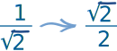
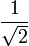
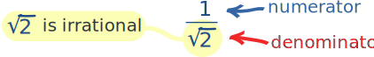
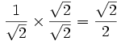

Rationalize the Denominator
|  | "Rationalizing the denominator" is when we move a root (like a square root or cube root) from the bottom of a fraction to the top. |
Oh No! An Irrational Denominator!
The bottom of a fraction is called the denominator.
Numbers like 2 and 3 are rational.
But many roots, such as √2 and √3, are irrational.
Example:  has an Irrational Denominator

To be in "simplest form" the denominator should not be irrational!
Fixing it (by making the denominator rational)
is called "Rationalizing the Denominator"
Note: there is nothing wrong with an irrational denominator, it still works. But it is not "simplest form" and so can cost you marks.
And removing them may help you solve an equation, so you should learn how.
So ... how do we do it?
1. Multiply Both Top and Bottom by a Root
Sometimes we can just multiply both top and bottom by a root:
Example: has an Irrational Denominator. Let's fix it.
Multiply top and bottom by the square root of 2, because: √2 × √2 = 2:

Now the denominator has a rational number (=2). Done!
Note: It is ok to have an irrational number in the top (numerator) of a fraction.
2. Multiply Both Top and Bottom by the Conjugate
There is another special way to move a square root from the bottom of a fraction to the top ... we multiply both top and bottom by the conjugate of the denominator.
The conjugate is where we change the sign in the middle of two terms:
| Example Expression | Its Conjugate | |
|---|---|---|
| x2 − 3 | x2 + 3 |
| Another Example | Its Conjugate | |
|---|---|---|
| a + b3 | a − b3 |
It works because when we multiply something by its conjugate we get squares like this:
(a+b)(a−b) = a2 − b2
Here is how to do it:
Example: here is a fraction with an "irrational denominator":
1
3−√2
How can we move the square root of 2 to the top?
We can multiply both top and bottom by 3+√2 (the conjugate of 3−√2), which won't change the value of the fraction:
1 3−√2 × 3+√2 3+√2 = 3+√2 32−(√2)2 = 3+√2 7
(Did you see that we used (a+b)(a−b) = a2 − b2 in the denominator?)
Use your calculator to work out the value before and after ... is it the same?
There is another example on the page Evaluating Limits (advanced topic) where I move a square root from the top to the bottom.
Useful
So try to remember these little tricks, it may help you solve an equation one day!